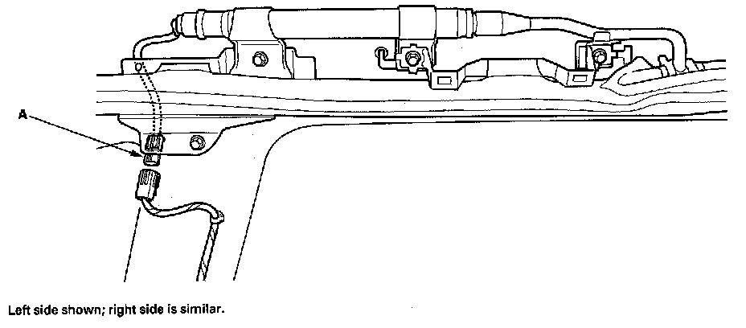
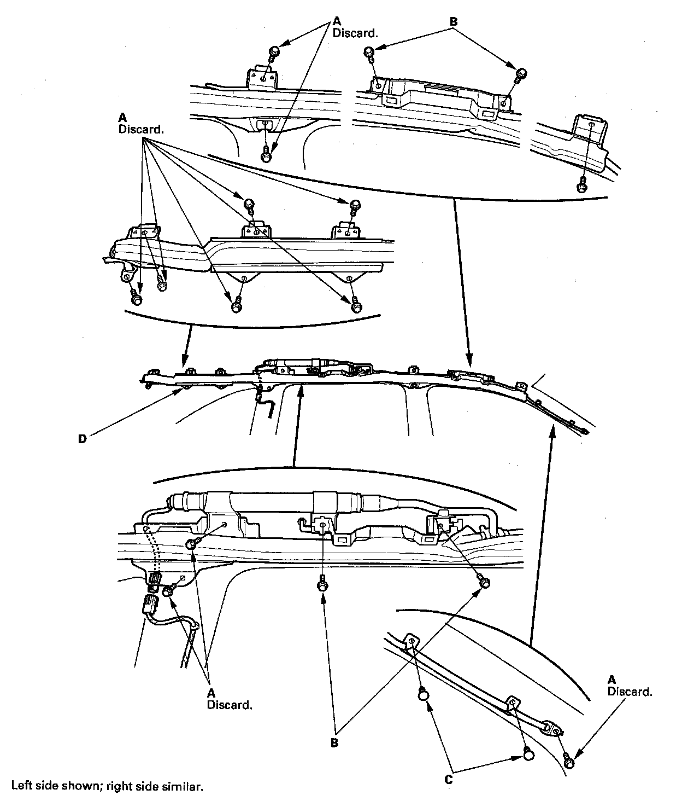
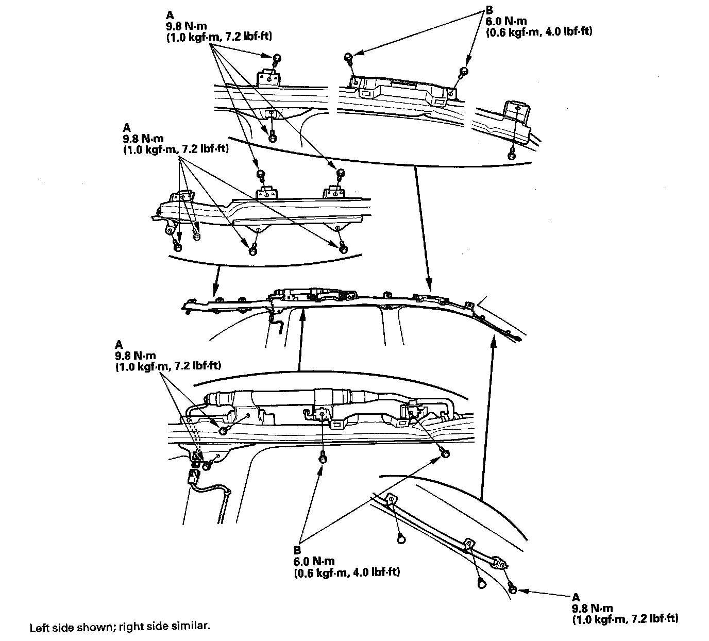
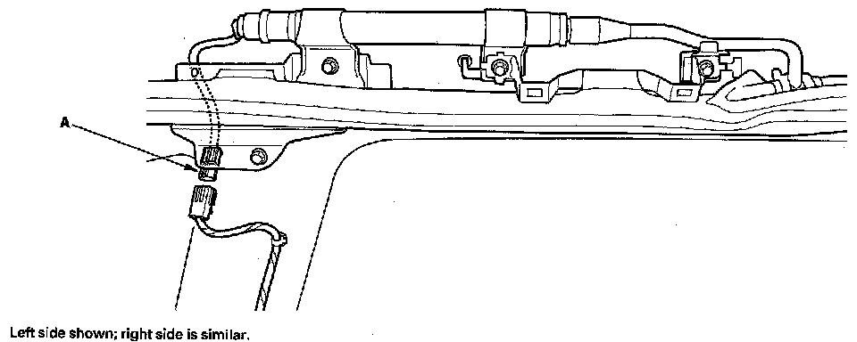

Side Curtain Airbag
Side Curtain Airbag ReplacementRemoval
NOTE:
- Review the interior trim replacement procedure before performing repair or service.
- Removal of the side curtain airbag must be performed according to the SRS precautions/procedures.
- The side curtain airbag system consists of the side curtain airbag module, including the roof trim, front grab handle, rear grab handle, all grab handle brackets and shielding protector. After the side curtain airbag has been deployed, replace these parts.
1. Disconnect the negative cable from the battery, and wait at least 3 minutes before beginning work.
2. Remove the headliner.

3. Disconnect the side curtain airbag 2P connector (A) from the floor wire harness.

4. Remove the mounting bolts (A) and mounting bolts (B) from the bracket. Detach the clips (C), then remove the side curtain airbag (D).
Installation
NOTE:
- Installation of the side curtain airbag must be performed according to the SRS precautions/procedure.
- If the airbag is frayed, or has any other visible damage, replace it. Do not attempt to repair an airbag.
- When you install the airbag, make sure it is not twisted, and that it is not caught between the inflator bracket by the bracket bolts.
- Make sure that the side curtain airbag inflator retainer is installed properly. Otherwise the airbag could accidentally deploy and cause damage or injuries.

1. Place the new side curtain airbag assembly on the side of the roof. Tighten the side curtain airbag mounting bolts (A) and mounting bolts (B).

2. Connect the side curtain airbag 2P connector (A) to the floor wire harness.
3. Reconnect the negative cable to the battery.
4. Connect the HDS, and erase the DTCs.
5. After installing the side curtain airbag, confirm proper system operation: Turn the ignition switch ON (II); the SRS indicator should come on for about 6 seconds and then go off.
6. Install all removed parts.
7. Confirm proper headliner/pillar trim overlap.